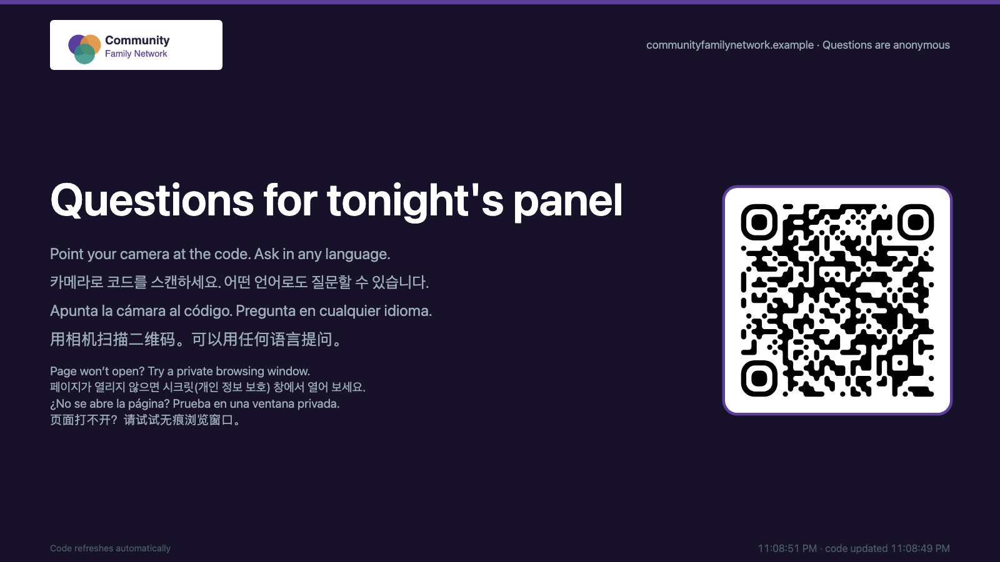
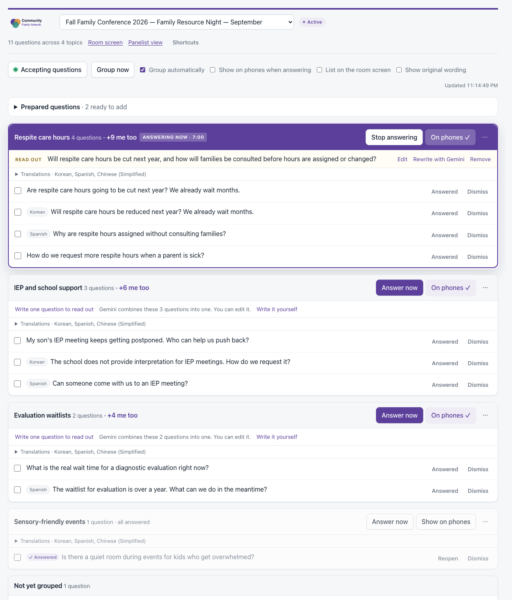
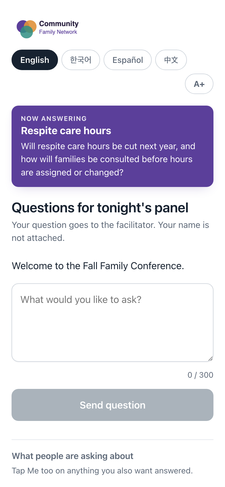

Question Desk
Every question heard, in any language.
Anonymous audience questions for live events and panels. People ask from their phones, a facilitator sees them grouped by topic and translated, and the room sees what's being answered. Built for the Autism Society of Los Angeles.
At an event
Scan the QR code on the screen in the room and type your question. No app, no account, and your name is never attached.
Ask in English, Korean, Spanish, Chinese, Vietnamese, Tagalog or Armenian.
Running a session
- QA Facilitators and administrators sign in with their organization's own account.
- Questions are grouped by topic and translated automatically.
- Show the live QR code on a slide with the PowerPoint add-in.
Private by design
It runs entirely on your organization's own account or server — there is no third-party service in the middle. Participants are anonymous, and nobody sees another person's question unless a facilitator puts it on screen.
What it looks like
From the room, from a phone, and from the facilitator's side. These are the real pages, filled with example questions.


{kind=link}

{kind=link}
Two ways to run it
The same Question Desk, the same pages, whichever suits your organization. Both are supported, and sessions move between them.
Google Workspace
A Google Apps Script web app inside your own Workspace account. Nothing to host, nothing to pay for.
WordPress plugin
For organizations that would rather run it on their own site. Staff are WordPress users; questions live in your database.
Support the Autism Society of Los Angeles
Your gift helps autistic people and their families across Los Angeles find information, support and community.